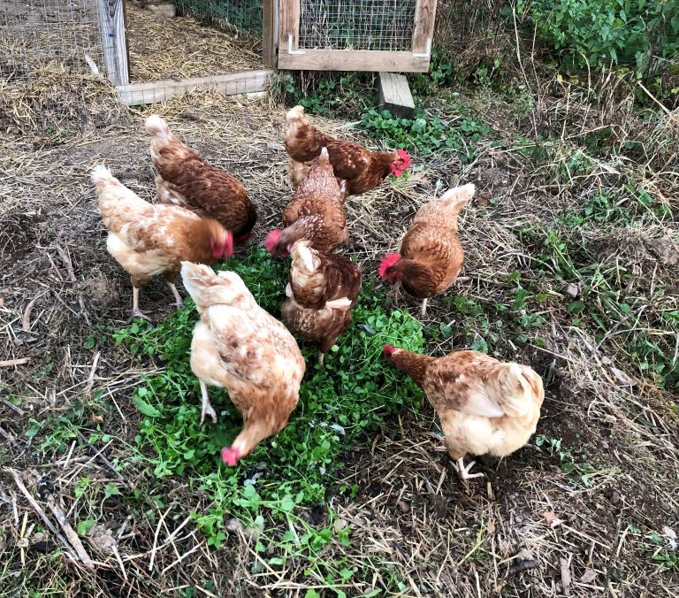

Life of Chickens
We have kept many breeds of laying chickens over the past decade or so. We typically get them as sexed
chicks in March,
raise them under a heat lamp in the basement for about two weeks, then transition them to a larger straw bale
home in our
garage with the same heat source and
finally to the outside coop by early May when they have substantial feathers and no longer need supplemental
heat.
A sexed chick simply means they
have been determined to be male
or female and for us, we only want to raise female chicks which are called pullets when they get feathers, and
hens when they start laying.
Both sexes start life simply being called "chicks". In addition to buying sexed chicks, one can also buy
"straight run" chicks
which means you get whatever sex was hatched and the
hatchery does not spend the effort to "sex" them to determine if they are male or female.
Straight run chicks are less expensive but if you want eggs, you can waste time and money raising roosters which
are only good for making a lot of noise, scratching your legs to defend their hens and, of course, fertilizing
their hens to make chicks.
We only raise hens, so without roosters, we have not hatched chicks from our own fertilized eggs.
That is a fun and rewarding exercise left to the reader.
To be more self-sufficient and raise your own chicks you would need a rooster. One is plenty.
We currently have two breeds which are champion layers of brown eggs, Golden Comets and ISA Browns.
Housing
The current coop, run, and pasture.
The coop was purchased from a local supplier and we added the
enclosed run a few years later after extensive losses to Red Foxes and Red-tailed Hawks. The hawks seemed to
especially
appreciate our providing practice prey when their young fledged and were being taught how to hunt and kill.
The fox population ebbs and flows in rhythm to the local supply of
Cottontail Rabbits
and the possibility of
getting a chicken on
occasion from the local homesteader makes no observable difference in their population but they certainly
seem to enjoy
the bonus protein.
Our first
coop was simply an old truck cap on posts enclosed with chicken wire and a pasture within an electric-net
fence.
That was not adequate protection for our girls.
Our current buried fence, double fenced, Fort Knox of coops had an initial flaw. Number 5 is still here
to testify.
When the run was added, we initially used a welded wire 2" x 4" mesh fencing around the entire perimeter,
completely wrapping the run and the lower
part of the coop to exclude predators, flying and grounded. It is buried 12" in the ground to discourage
diggers. At the time we
had 5 hens.
Because we have a dog which regularly checks the status of the hens when she is out, they seem accustomed to
a large predator type mammal outside the fencing. The day the fox arrived for dinner, apparently the flock
was lackadaisical in their retreat into the coop and we later surmised from the bent wire, that Mr. Fox had
reached through
the welded wire fence as the last hen was running up the gangplank, spreading the wire grid along the 4"
axis and badly damaging the rear of the last hen up, e.g. Number 5. She lived to tell the tale after some
serious
tending and we augmented the bottom 2 feet of the perimeter with 1" x 1" welded wire.
Those five hens and the subsequent 6 have lived without fear of predators and the 3 lost have been to
natural
causes.
A fox of course could be considered a natural cause, more so perhaps than gorging on old bread before the
caretakers came to their senses.
Chicks in their initial basement home. These were Buff Orpingtons, eventually they were big, gentle,
pretty
girls but not great layers.

Chicks in their garage straw bale house. If we buy the chicks a bit later than March, then we start
raising them in the unheated
garage under the heat lamp, skipping the early stage of keeping them in the heated basement
For several years we had Black Sex Links and Ameraucanas as pictured here.
The Black Sex Links are hybrids of a Rhode Island Red rooster with a Barred Rock hen and as such
will not breed true if you mate them. They are a great benefit to breeders because their color is linked
to their sex, only female chicks are all black.
They are great layers of brown eggs and very hardy.
By contrast, the Ameraucanas (AKA Easter eggers) in
our experience lay smaller eggs and are not as productive overall. Note that chick retailers large and small
will interchangeably label these two chicks. Ameraucanas are a breed and lay blue eggs. Easter eggers are
not recognized
as a breed and lay eggs of many colors so you generally find out if your chicks were not correctly labeled
when they
start laying. If you have children, they won't care because they will love all the pretty eggs.
Regardless, Easter eggers have the Ameraucanas in their parentage.
Chickweed
Chickweed is one of those classic plants hampered by the perjorative inclusion of the term "weed".
As a gardener, I only knew it as something I often had to weed out of the food and flower beds,
and unlike Dandelions or Purslane,
had heard nothing of its beneficial properties as an edible plant until we had chickens.
Given its name, when we first had chickens, I wondered if they might like it. Indeed! They will run over
your feet to get to it and quickly and clearly establish the pecking order while eating it.
And it's not just for chickens. It is one of the healthiest greens readily available to us humans,
just check out what the New York Botanical
Garden has to say.
We are picking it in October/November because it thrives in the cool wet late fall weather,
snipping off a stem with the last 5 or so pairs of leaves and eating it tender stem and all in a green salad.
The girls eating their very healthy greens.
